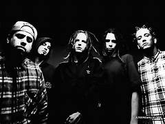

Biografía
Korn es una banda pionera del nu metal formada en 1993 en Bakersfield, California, por exmiembros de la banda L.A.P.D.: James "Munky" Shaffer, Reginald "Fieldy" Arvizu y David Silveria. Posteriormente se unieron Brian "Head" Welch y Jonathan Davis, consolidando su formación clásica.
Información detallada
- Origen: Bakersfield, California, EE.UU. - Género: Nu metal, con influencias de metal alternativo, grunge y rap - Año de formación: 1993 - Estilo distintivo: Uso de guitarras de siete cuerdas, letras introspectivas y una estética cruda y emocional - Influencia: Korn es considerado uno de los fundadores del nu metal, influenciando a bandas como Slipknot, Linkin Park y Limp Bizkit
